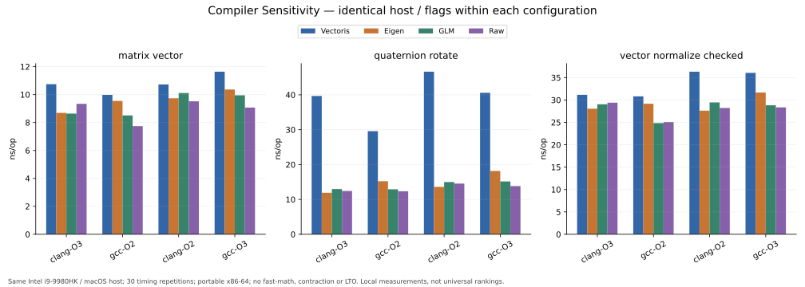
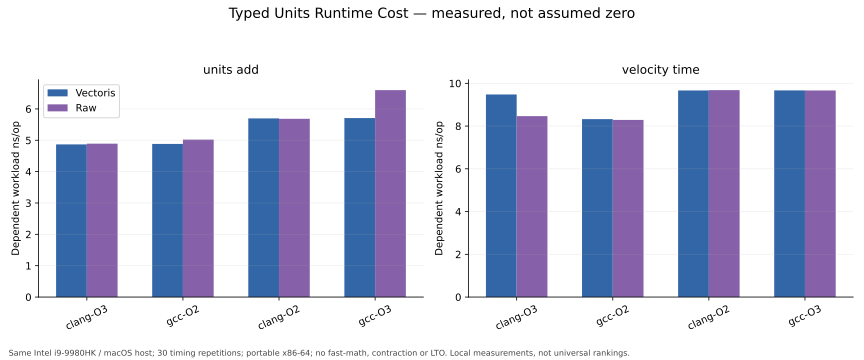

VectorisNumerics 1.0.0
性能、数值输出与测量边界
Intel i9-9980HK · macOS x86-64 · GCC 16.2.0 / AppleClang 21.0.0 · double
Release SHA: be678b17a9ba58c9be5bca5ab59112fe74d9a83b
816 scenarios24,480 samples30 repetitions/caseLinux: NOT RUN先读测量含义
Latency 是结果依赖工作负载的完整耗时；Throughput 是八路独立工作负载吞吐。包含取输入与结果观测，不是孤立CPU指令耗时。p99来自重复平均值，不是单次调用尾延迟或WCET。
同一编译配置各库相同flags。无fast-math、FP contraction或LTO；portable x86-64。桌面共享host未绑核或锁频，因此这是本地工程测量，不能代表所有机器。
abs/AlmostEqual的依赖链另采720条记录，替换原对应场景；原始数据保留，不合并成60次重复。来源与方法见详细报告。
详细报告 · 汇总CSV · 原始CSV · 环境 · 输入/输出样例 · 复现步骤
compiler-comparison

units-overhead

结论边界
不给综合分数，不宣称Vectoris普适胜过Eigen/GLM，不把最小算术与安全检查混比。真实不利结果同样披露。Units差异按本批CI解释，不能据单机数据宣称跨平台zero-cost。
Benchmark results are workload-, compiler-, hardware-, and configuration-dependent and should not be interpreted as universal performance rankings.
Performance benchmarks do not substitute for numerical correctness or robustness validation.
AFA5-001/002仍为OWNER ACCEPTED RELEASE DEBT。本页不替代独立审计或资格认证。